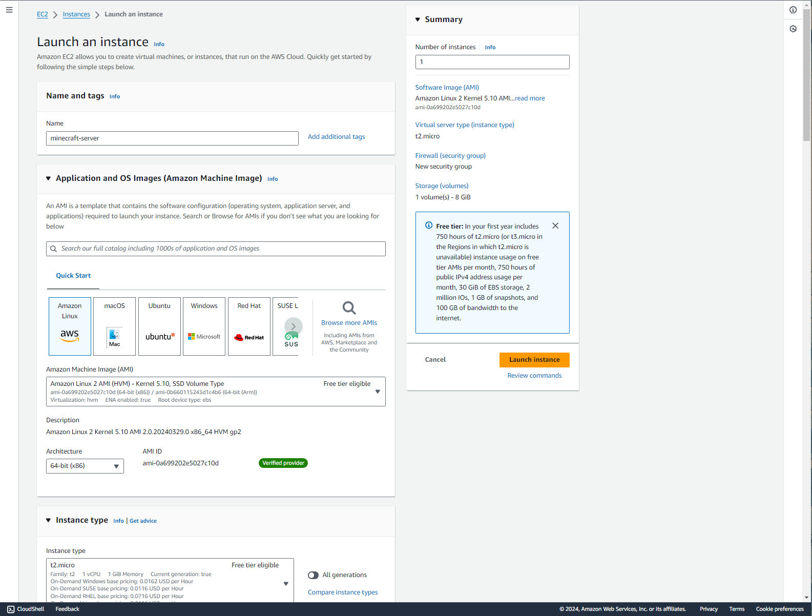
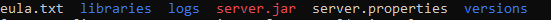
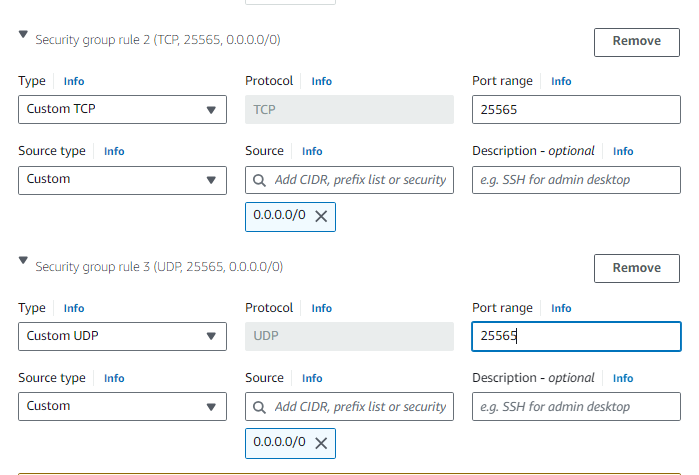
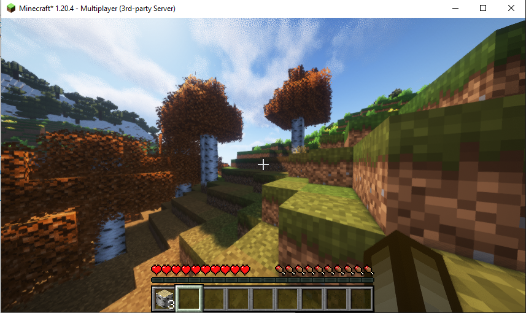
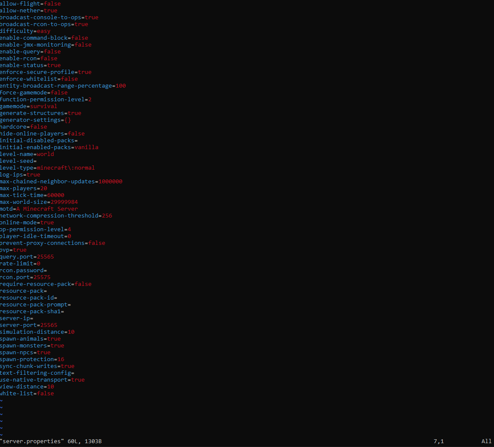

Every Kid's Dream..a Minecraft server
My History with Minecraft
Growing up, I loved to play games, Minecraft in particular. At one point, Minecraft was the reason my interest for cybersecurity grew a big amount.
One time when I logged on a server, my friend had mentioned that he couldn’t log in after multiple attempt, and that the connection would time out or the server would lag and everyone would be standing still.
Soon after he mentioned this, I realized I was starting to get the same problems as him. Later, I was informed that the server had been flooded by a DDoS attack.
A DDoS attack is an attempt to disrupt the normal traffic coming in for a server/service. The goal of the attack is to make its target unavailable by causing resource exhaustion.
After the attack happened, I delved deeper into my curiosity about learning how to safeguard myself from an attack in the future, or how a service can mitigate the attacks from happening in the future.
This curiosity helped build my understanding of cybersecurity principles and techniques through researching.
Getting Started with the Set-Up
I set up my Minecraft server by using Amazon’s AWS EC2 instances they provide in their cloud.
Click here to create a free account: https://aws.amazon.com/
After creating an account I launched an instance, created a name for my machine and used the following configurations for the machine:
Virtual service type (instance type): t2.medium
Next, I created a secure key pair used in order to securely connect to my machine. After creating a key-pair, I saved the key file onto my desktop.
Once done, you can start the instance by clicking: Launch Instance.

Connecting to the Instance
Now that the instance is up and running, it is time to connect to the instance. You can do this by opening up a terminal, “cmd” on a Windows machine.
You can use ssh in order to connect to the machine using the key-pair. Use the following command below to access your server:
The -i flag specifies the private key to use when connecting to the server as the user@hostname.
Setting up the Instance
Once connected to the instance, I first created a new directory to help organize my files for the future using this command:
Next, we need to install the programming language responsible for running Minecraft, Java. You can install the latest version of Java using this command:
Now that java is installed, we have to install the server.jar file that runs Minecraft multiplayer server. You can head to this website to download the file:
https://www.minecraft.net/en-us/download/server
Next, once that is installed into our local machine, we have to scp it into our new instance.
SCP, or 'secure copy' is a protocol used in conjunction with ssh in order to securely transfer files between two hosts.
You can do this by running this command:
Running the server to set up
Now that we have the server.jar file in our instance we can run the minecraft server by running this command:
Since we selected the t2.medium service for our machine, we can give it around 3 gigabytes of ram for the server.
Next hit run, you may get an error that displays a message saying the terms need to be agreed before proceeding.
Type in ls and you may see these new files that appear in your dir.

If this happens, you can open a text editor such as vim and edit the eula.txt file.
Click i to insert, change the eula-false to eula-true and type :wq! to save your edits and exit out the file. This should allow you to run the server now that you’ve agreed to the terms and conditions.
Connecting to the server
Once the server is running, you can now connect.
However, before connecting, head to the console page on your aws instance and add two new inbound security groups rules under your network settings.
Add a new group type called Custom TCP giving it a port range of 25565 and a source range of 0.0.0.0/0 and another new group type called Custom UDP giving it the same port range and source range.

Now that the new rules have been added you can connect to your machine.
Grab the public ipv4 address from your aws instance and copy and paste it to your minecraft client and click ‘join server’.

You can edit the Minecraft server configurations by heading into the server-properties file.

You can stop the server by heading to the terminal and entering stop.
Creating a script to easily run the server
In order to run the server, you would have to run the java command we ran earlier.
Since this may be a hassle to type you can create a bash script and run the script instead of running the command everytime you want to run the server.
Name the script anything, example: start_server.sh
cd minecraft-server
java -Xxx3G -Xms3G -jar server.jar nogui
Troubleshooting Problems
When first connecting to the newly created instance using ssh, I ran into this problem:
@ WARNING: UNPROTECTED PRIVATE KEY FILE! @
@@@@@@@@@@@@@@@@@@@@@@@@@@@@@@@@@@@@@@@@@@@@@@@@@@@@@@@@@@@
Permissions for 'MYPRIVATEKEY.pem' are too open.
It is required that your private key files are NOT accessible by others.
This private key will be ignored.
Load key "MYPRIVATEKEY.pem": bad permissions
ec2-user@[YOUR PUBLIC DNS]: Permission denied (publickey,gssapi-keyex,gssapi-with-mic).
The error was given because the permissions that are set on the private key are too open, meaning other users have access to the key.
In order to resolve this issue, I gave permissions to the owner and removed all access for all other groups by running this command:
There is also a simpler way you can do this by using the gui in windows:
Navigate to the key stored on your computer and right click:
properties → security → advanced → disable inheritance → remove all inheritance permissions → add → select principal
Next, you can enter the username of the account and check the box that gives full control and save. Now if you run the ssh command again to connect to the instance, you should have no problem.